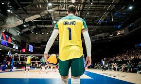

o volei é mais que um esporte
o volei pode mudar vidas assim como mudou a minha
Gilberto Amauri Godoy Filho, conhecido como Giba (Londrina, 23 de dezembro de 1976), é um ex-voleibolista indoor brasileiro. Atuava na posição de atacante de ponta e conquistou os principais títulos pela Seleção Brasileira, desde as categorias de base à principal, sendo oito vezes medalha de ouro na Liga Mundial, tricampeão mundial e ouro olímpico em 2004 e prata em 2008 e 2012.

Sérgio Dutra Santos, mais conhecido como Serginho ou Escadinha (Diamante do Norte, 15 de outubro de 1975), é um ex-jogador de vôlei brasileiro, que atuou como líbero. Para Guilherme Costa, blogueiro do GloboEsporte.com sobre esportes olímpicos, Serginho é o maior herói olímpico da história do Brasil, já que ele "tem grandes conquistas em seu currículo, tem carisma, é um exemplo aos mais jovens e não cometeu nenhuma grande gafe durante sua carreira".[1]
É tido como o melhor líbero da história do vôlei, com suas defesas difíceis e passes precisos, fazendo diferença em suas atuações. Em 2009 foi eleito o MVP da Liga Mundial daquele ano, tornando-se o único líbero da história a ter conquistado essa posição. [2] É o único jogador da história a disputar quatro finais olímpicas consecutivas entre 2004 e 2016, entre as mulheres a Soviética Inna Ryskal também tem este feito entre 1964 e 1976. Bicampeão nos Jogos Olímpicos de Atenas (2004) e Rio de Janeiro (2016), onde foi eleito o MVP (Jogador Mais Valioso) do torneio masculino. [3]

Na infância, Bruninho praticava badminton, futebol e voleibol. Aos 14 anos de idade decidiu se dedicar por este último.[2] Começou sua carreira nas categorias de base do Fluminense.[3] Em 2003 o atleta se profissionalizou e foi atuar no Unisul, no estado de Santa Catarina. Após o patrocinador principal, o Grupo Cimed, retirar o patrocínio da equipe, foi formado uma nova equipe, o Cimed Florianópolis;[4] clube com o qual o levantador vestiu a camisa por 7 temporadas, conquistando cinco edições do Campeonato Catarinense, uma Copa do Brasil, quatro títulos da Superliga e um Campeonato Sul-Americano.[2][5]
No final da temporada 2010–11, Bruninho foi eliminado da Superliga nas quartas de final pela equipe do Vôlei Futuro e logo em seguida acertou um contrato de curta duração com o Modena Volley para a disputa dos playoffs do Campeonato Italiano, para substituir o então levantador lesionado Mikko Esko.[6] Com o novo clube, o levantador foi eliminado pelo Trentino Volley nas semifinais após três derrotas na série "melhor de cinco".

{kind=link}